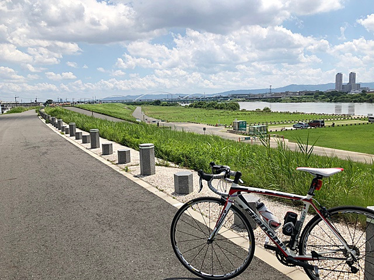
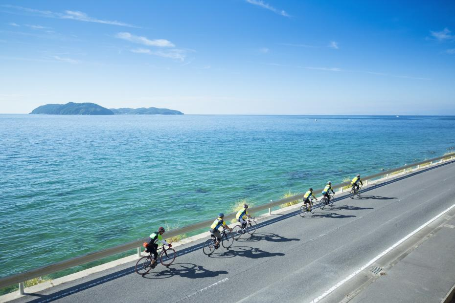

武庫川サイクリングロード
いいね数 ユーザー名
全長7kmの武庫川サイクリングロードは初心者でも川沿いで走りやすくオススメ。 武庫川沿いを西宮側から宝塚に向かって走るコースです。
淀川サイクリングロード 
淀川サイクリングロードは、大阪から京都まで淀川沿いに走る全長約50~60kmのサイクリングコースです。往復すると100kmを超えますので、長距離ライドが初めての方は復路に輪行するのもいいでしょう。
淡路島一周 
兵庫・大阪のサイクリストから人気を集めるサイクリングコースの淡路島一周、通称「アワイチ」です。淡路島一周は約150kmですが、スタート位置やコースを工夫することで初級者から上級者まで様々なレベルのサイクリストが走ることができます。
しまなみ海道
サイクリストの聖地として人気急上昇中の『しまなみ海道』。広島県の尾道と愛媛県の今治を結ぶ片道おおよそ70kmのコースです。 瀬戸内に浮かぶ島々を結ぶ橋を自転車で横断でき、各島ごとのご当地グルメを味わえるのも魅力の一つです。